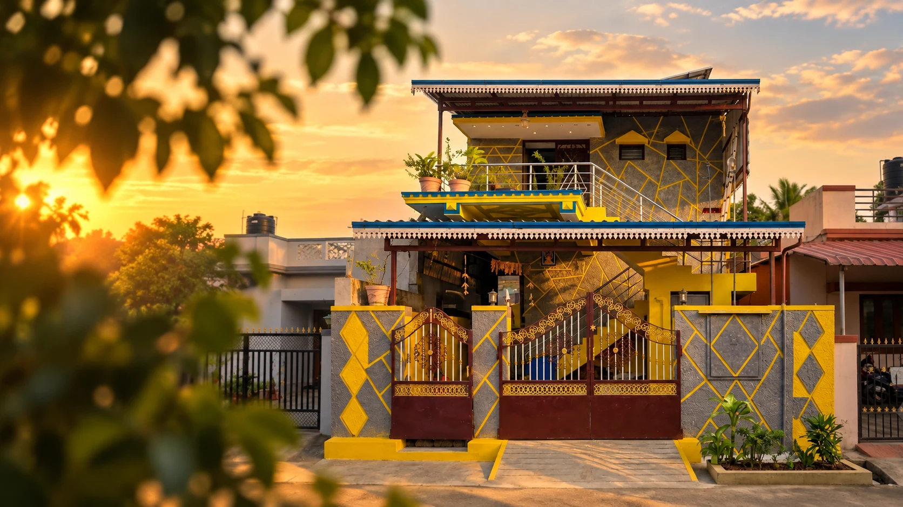

Location & Directions to
Nisha Home Stay, Semmedu
Conveniently situated at 330/1, NGR Street in Semmedu, Coimbatore (PIN 641114). Located directly on the western scenic corridor leading to the Velliangiri Foothills, just 10 minutes from Isha Yoga Center and 12 minutes from Adiyogi.
Proximity to Primary Attractions & Transit Hubs
Plan your journey easily with our verified distances and average drive times from Nisha Home Stay.
| Destination / Hub | Distance | Approximate Drive Time | Recommended Mode | Navigation Link |
|---|---|---|---|---|
| Isha Yoga Center & Dhyanalinga | 6.5 km | 10–12 minutes | Car / Auto / Scooter | Google Maps ↗ |
| Adiyogi Shiva Statue | 7.5 km | 12–14 minutes | Car / Auto / Scooter | Google Maps ↗ |
| Velliangiri Hills Trekking Starting Point | 8.0 km | 15 minutes | Car / Auto / Bike | Google Maps ↗ |
| Coimbatore Junction Railway Station (CBE) | 28.0 km | 45–55 minutes | Taxi / City Bus (14D) | Route from CBE ↗ |
| Coimbatore International Airport (CJB) | 38.0 km | 60–75 minutes | Pre-paid Taxi / Cab | Route from CJB ↗ |
| Gandhipuram Central Bus Stand | 29.0 km | 50–60 minutes | Direct Bus / Taxi | Route ↗ |
By Personal Car or Taxi
From Coimbatore city, take Perur Main Road or Siruvani Road through Thondamuthur. Continue westward toward Semmedu. Turn into NGR Street at Semmedu junction; our property (330/1) is clearly situated with boundary gate and parking.
By Public Bus (TNSTC)
Board the 14 series buses (14D, 14C, 14E) from Gandhipuram Central Bus Stand or Ukkadam Bus Stand heading toward Isha Yoga Center / Dhyanalinga. Get down at Semmedu Bus Stop, just a 3-minute walk from our property.
Local Transport Assistance
Need a taxi pickup from Coimbatore Railway Station or Airport? Or a two-wheeler to commute to Isha every morning? Call us in advance at +91 63813 97636 and we will gladly assist with trusted local drivers and scooter rentals.
Find Us on Google Maps
330/1, NGR Street, Semmedu, Coimbatore, Tamil Nadu 641114
330/1, NGR Street, Semmedu, Coimbatore 641114
Frequently Asked Questions About Reaching Us
Have questions about your arrival or route? Call our hosts anytime.
Taking a direct taxi or cab via Thondamuthur Road is the fastest and most convenient method (approx. 45–50 minutes). Alternatively, city bus route 14D from Gandhipuram runs directly through Semmedu.
Ola and Uber cabs can drop you off from Coimbatore airport or railway station to Semmedu. For local travel between Semmedu, Isha, and Adiyogi, local autos and taxis arranged through us are more reliable.
Yes. We have secure on-site vehicle parking for guests' personal cars and two-wheelers inside the premises and along NGR Street.
Plan Your Arrival & Check-In
Contact us ahead of time so we can guide your vehicle and have your 1BHK unit prepared for your arrival.